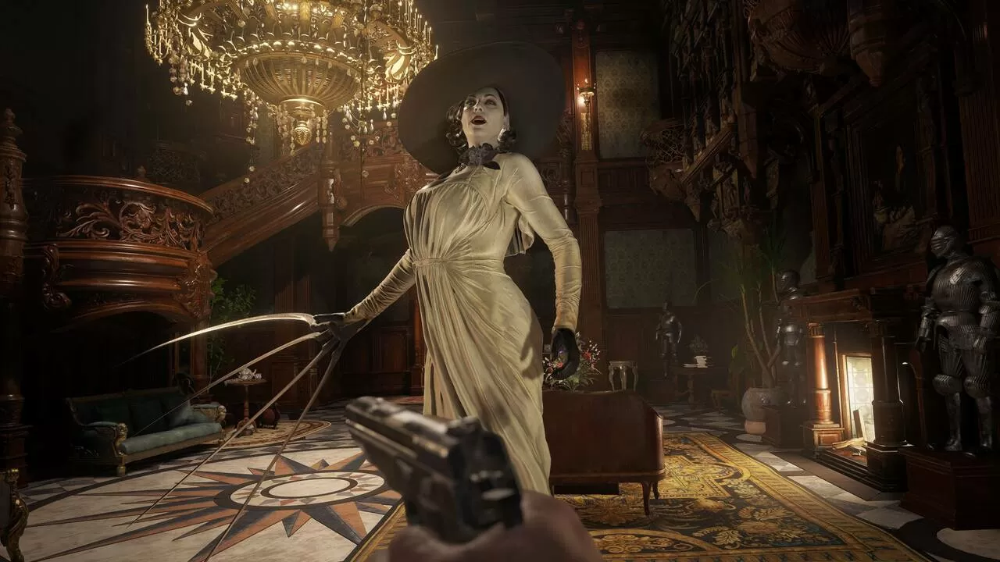
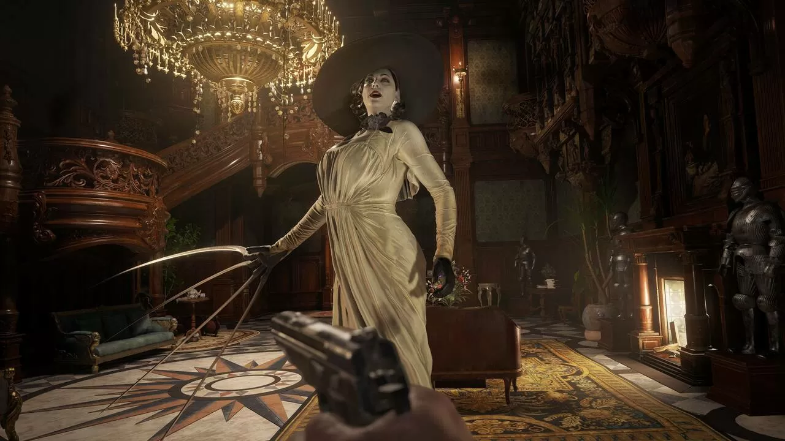

Final Fantasy VII: Remake
Uno de los mejores juegos de la historia de los JPRG, recibe el remake más esperado por los fans durante años, en forma de Hack and Slash.
Género: JPRG
Año de lanzamiento: 2022
Año de lanzamiento: 2022


 
